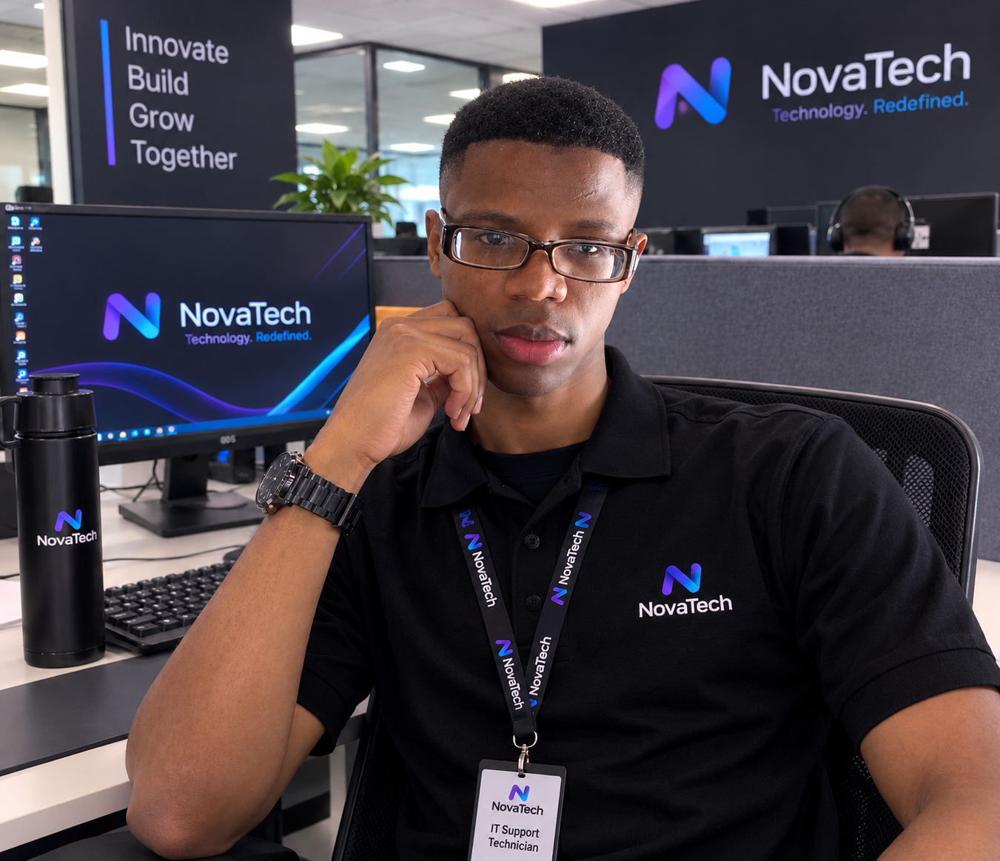

IT Support
Developing practical experience in technical support, Windows environments, hardware and software troubleshooting, printer configuration and user assistance.
01 / GET TO KNOW ME
A technology enthusiast driven by curiosity, continuous learning and the desire to build something meaningful. This is my journey through IT, development and cybersecurity.

02 / WHO I AM
I am an IT Support professional with an interest in technology, problem-solving and building practical digital solutions.
My professional experience has helped me develop an understanding of computer systems, troubleshooting, technical support and assisting users with technology-related challenges.
Outside my professional work, I am developing my skills in web development and exploring the field of cybersecurity.
I believe that technical ability is developed through practice, consistency and a willingness to keep learning.
03 / MY PHILOSOPHY
I believe growth comes from challenging yourself, embracing new opportunities and remaining curious about what is possible.
04 / MY JOURNEY
The areas shaping my professional development and technical journey.
Developing practical experience in technical support, Windows environments, hardware and software troubleshooting, printer configuration and user assistance.
Learning to create websites and digital experiences using HTML, CSS and JavaScript. Building personal projects to strengthen my practical development skills.
Exploring networking fundamentals, IP addressing, DNS, connectivity troubleshooting and how devices communicate across networks.
Working towards deeper knowledge of cybersecurity, security fundamentals, defensive practices and practical laboratory exercises.
05 / WHERE I'M HEADING
My long-term ambition is to develop into a skilled cybersecurity professional. I see IT Support as an important foundation for understanding infrastructure, operating systems, networks and the technical challenges organisations face.
I intend to continue strengthening my technical foundation, developing practical projects and pursuing professional certifications as I progress.
06 / WHAT DRIVES ME
Asking questions, exploring technology and understanding how things work.
Making progress through continuous learning and practical application.
Developing my own perspective, embracing originality and building a distinctive identity.
07 / LET'S CONNECT
I'm always interested in connecting with people who share an interest in technology, innovation and growth.
Get in touch ↗